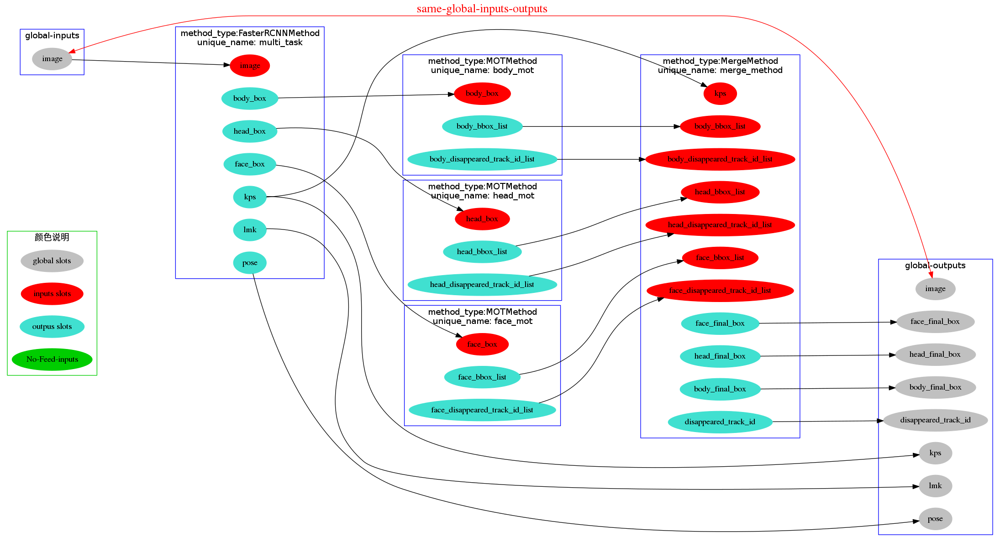
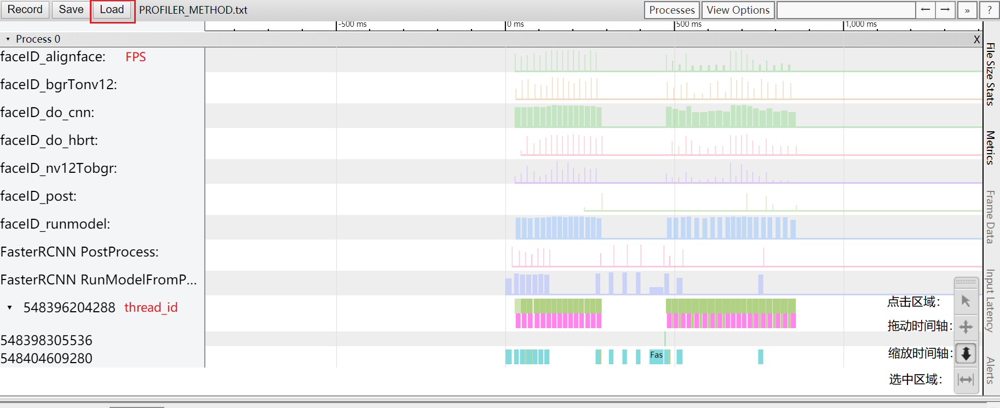
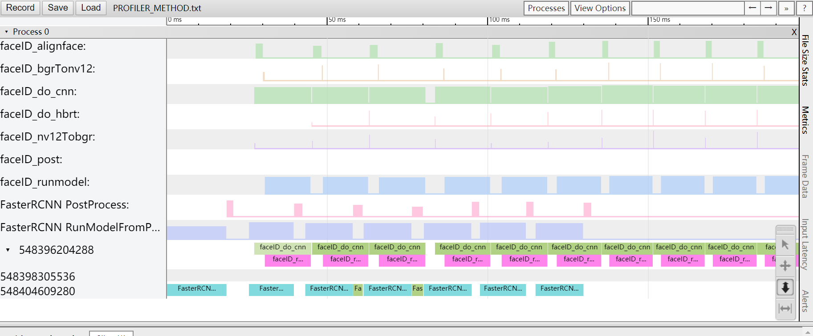

工具集¶
本文介绍AI Express相关工具集，注意：该文档仅仅介绍工具使用方式，不展开将使用教学，可以新搞一个文档链过去，比如：性能profile最佳实践
数据流可视化工具¶
XStream内的数据流是通过配置json文件来生成的，框架内目前已对数据流配置是否有效进行了检查，而此工具可将配置的json文件数据流向图可视化，生成一份自定义格式的文档或图片，以直观的方式展现json文件中的数据流向。
工具位于source/common/xstream/framework/tools/xstream_framework_datashow.py
1. 准备环境：工具通过python3 + graphviz + dot实现，使用前需安装 python3（推荐python3.5.2）、graphviz库、json库
2. 使用工具：
使用该文件的运行格式为：python xstream_framework_datashow.py xxx.json 效果图如下：

3. 可视化后的workflow：
某个node的inputs得不到feed，图中体现为：绿色填充，标签中带有字段：(No-Feed)
全局inputs和全局outputs重名，图中体现为：红色双箭头边相连，边带有字段：same-global-inputs-outputs
某些node间的outputs重名，图中体现为：浅蓝色双箭头边相连，边带有字段：same-node-outputs
Python-Workflow构建工具¶
XStream中Workflow是通过Json配置文件来描述的。当一个Workflow变得复杂时，Json配置文件则变得冗长，增加维护的困难性，体现在如下几个方面：
串联各个节点的输入和输出名字需要手动填写，容易出错或者造成命名冲突。
各个节点的顺序关系要保证，对于不熟悉的开发者来说，需要花时间去梳理Node的逻辑关系之后才能添加新的Node。
无法快速的发现并去除冗余路径上面的节点。
图可能出现环路。
经过实践发现，构建Workflow的过程其实和编程类似。Json在这个地方就是起到了编程语言的作用。与其发明一种新的语言，就不如使用如今非常流行的Python语言来实现快速构建Workflow，并解决上面的问题。可以通过下面命令，来安装Python-Workflow构建工具
cd source/common/xstream/python_api
pip install -e
安装成功之后便可以使用了。详细参见Python-Workflow构建
性能Profiler工具¶
XStream内部提供了性能统计的工具，用户可以通过XStream的对外接口SetConfig打开或关闭该功能，默认该功能关闭。
配置profiler功能
int SetConfig(const std::string &key, const std::string &value)
key为”profiler”, value为”on”, 表示打开性能统计功能。”off”表示关闭, 默认为关闭。
key为”profiler_file”, value为性能统计输出文件路径，用于设置性能统计文件的路径名称，框架层次的统计数据输出至该文件。
若程序中创建多个XStream SDK，则不同的SDK可以设置不同的配置。
xstream1->SetConfig("profiler", "on"); // 设置打开profiler功能
xstream1->SetConfig("profiler_file", "./profiler_1.txt"); // 设置框架层统计数据输出文件
xstream2->SetConfig("profiler", "on"); // 设置打开profiler功能
xstream2->SetConfig("profiler_file", "./profiler_2.txt"); // 设置框架层统计数据输出文件
Method内的统计数据默认输出至文件”PROFILER_METHOD.txt”, 用户若需要更改，可通过访问性能统计的全局单例设置智能策略内的统计数据：Profiler::Get()->SetOutputFile("xx.txt")
性能统计数据类型
目前XStream内支持的性能统计数据包括处理时长（Time）和帧率（FPS）两种。其中函数处理时长的默认统计最小间隔是3000微秒（即3毫秒），若函数处理时间低于3毫秒，则不计入统计范围；帧率的默认统计最小间隔是200毫秒，若统计周期小于200毫秒，则不计入统计。
为了支持不同业务场景的处理耗时不同，目前支持用户对统计粒度的修改。
int SetConfig(const std::string &key, const std::string &value)
key为”profiler_time_interval”, value为整型数据（单位：微秒）, 表示设置函数处理时长的最小间隔。
key为”profiler_fps_interval”, value为整型数据（单位：微秒）, 用于设置帧率的最小间隔。
xstream1->SetConfig("profiler_time_interval", "1000"); // 设置函数处理时长的最小间隔为1毫秒
性能统计数据可视化
用户打开性能统计后，若统计结果输出到文件”profiler.txt”，可以通过访问chrome://tracing/，通过页面的Load按钮将文件加载，即可看到统计数据可视化界面。以下图为例，页面上的横坐标表示”时间”；前几行(标志是字母)的纵坐标表示对应Method处理的帧率；后几行(标志是数字)的纵坐标表示不同线程”thread_id”，同时页面左下角提供了缩放、拖动等工具以便用户查看数据细节。

使用缩放工具缩放坐标，可以查看数据细节，不同的函数执行时间以不同颜色标志，并标记函数处理类型，如下图： 
渲染可视化工具¶
开发中..